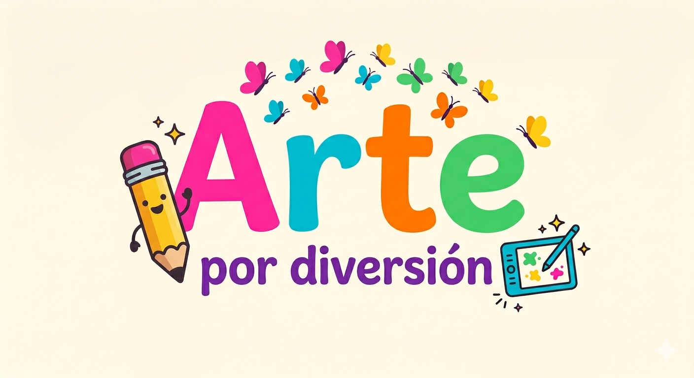

Página en Construcción
Estamos trabajando para traerte una experiencia increíble.
Vuelve pronto para descubrir todo lo que ArteXDiversion tiene preparado para ti.
Próximamente
Estamos trabajando para traerte una experiencia increíble.
Vuelve pronto para descubrir todo lo que ArteXDiversion tiene preparado para ti.
Próximamente